Softwarekonfigurationsübersicht
Diese Kapitel beschreibt die verschiedenen Softwarekomponenten der DC-Ladeeinheit sowie die notwendigen Schritte zur Konfiguration der beteiligten Systeme. Dazu gehören der vSECC-Ladecontroller, das COS-Dashboard, der Moxa IO-Controller und die AST-Energiezähler.
vSECC
Der vSECC-Controller bietet ein Web-Interface zur Konfiguration der Netzwerkeinstellungen, Firmware, Container-Umgebung und Backend-Verbindungen.
Der Zugriff erfolgt über einen Browser und hängt vom Zustand des Controllers ab (vorkonfiguriert/nicht vorkonfiguriert).
Zugriff auf das Web-Interface
Nicht vorkonfigurierter Controller
- IP-Adresse 192.168.3.11 (rechter Ethernet-Port)
- Login:
- Benutzername: admin
- Passwort: rootpassword
Vorkonfigurierte Controller
- IP-Adresse 192.168.24.21 (linker Ethernet-Port)
- Login:
- Benutzername: admin
- Passwort: (Configurator-Passwort)
Grundkonfiguration
Die Grundkonfiguration des vSECCs erfolgt über eine auf GitHub bereitgestellte Datei config.yml. Diese Datei enthält die vorgegebenen Netzwerkeinstellungen sowie die Basisparameter des Controllers.
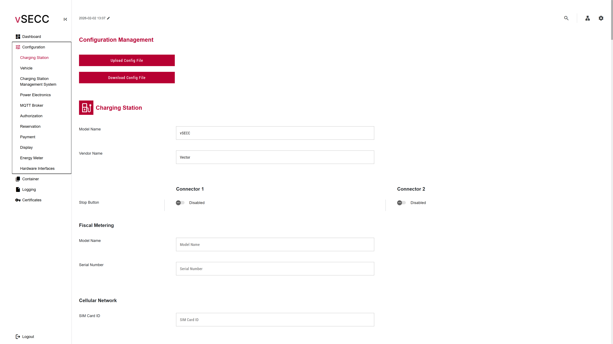
Abbildung -
Ablauf:
- Web-Interface öffnen
- Menüpunkt „Configuration“ wählen
- Button „Upload Config File“ auswählen
- Config.yml auswählen und hochladen
- Controller führt automatisch einen Neustart durch
Firmwareupdate
Firmwareupdates werden über das Zahnrad-Symbol (Abbildung 3-2) oben rechts durchgeführt.
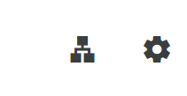
Abbildung -
Vorgehen:
- Einstellbereich öffnen
- „Upload Firmware“ auswählen
- Firmwaredatei hochladen → nur Datei vSECC_vx.x.x.raucb verwenden
- vSECC startet automatisch neu
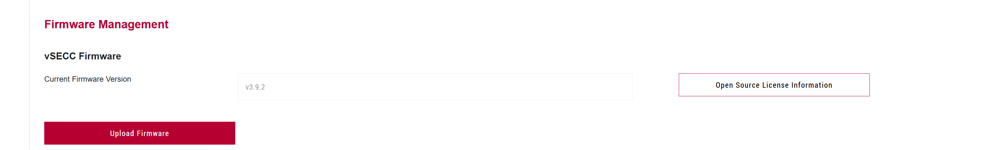
Abbildung -
Node-Red Container
Der vSECC betreibt Node-RED in einer Containerumgebung.
Installation des Container-Images:
- Menü „Container“ wählen
- „Upload Image“ auswählen
- Datei „vSECC_vSECC.MCS_ContainerImageBundle_vx.x.x.vCIB“ hochladen
- Upload abwarten, kann mehrere Minuten dauern
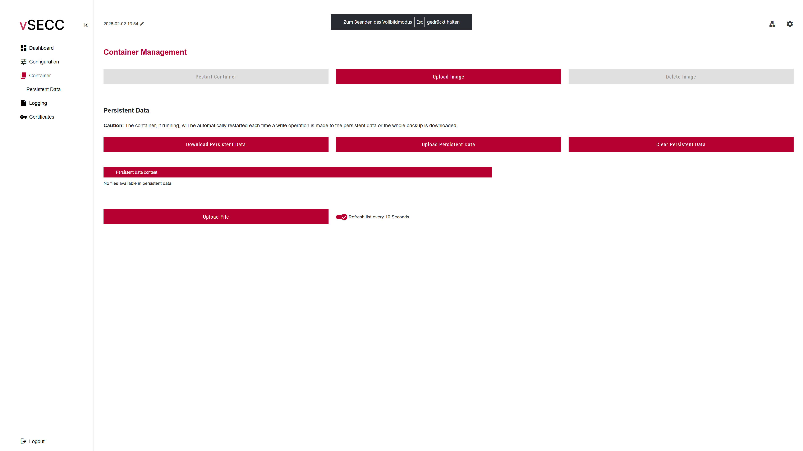
Abbildung -
Node-RED-Flow installieren:
- Untermenü „Upload File“ wählen
- Datei „flows.json“ hochladen
- Fertig, sobald Upload abgeschlossen ist
Backendverbindung (CSMS)
Im Menü wird die Backend-Verbindung (OCPP) eingerichtet.
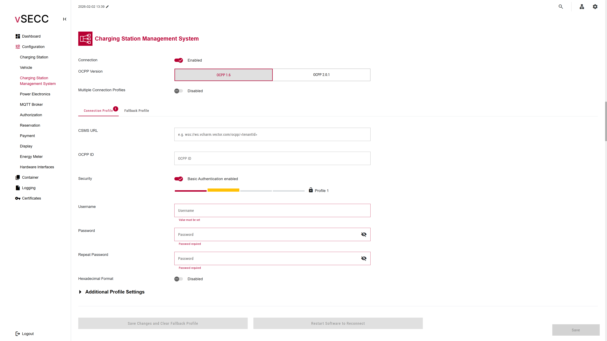
Abbildung -
Hinweise:
- Felder gemäß Backendbetreiber ausfüllen
- Ist kein Backend gewünscht → „Connection“ deaktivieren
- Änderungen müssen zwingend mit „Save“ gespeichert werden
Zeit und Datumseinstellung
Eine korrekte Uhrzeit ist zwingend notwendig für:
- OCPP-Kommunikation
- Signierte Messwerte
- Logeinträge
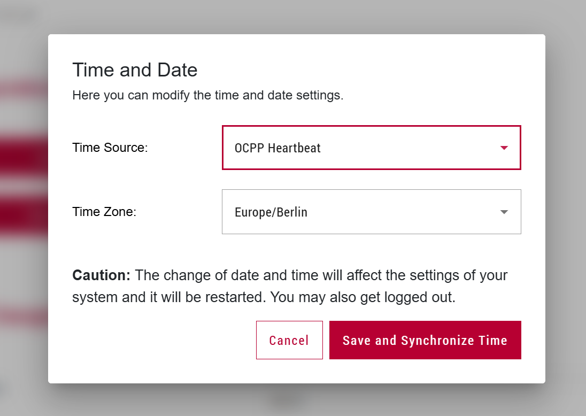
Abbildung -
Einstellung:
- Mit Backend → Time Source = OCPP Heatbeat
- Ohne Backend → Time Source = Local Host Time
Moxa E1280
Der Moxa-IO-Controller ist für die Temperaturerfassung zuständig und unter der IP 192.168.24.41 erreichbar. Er liefert Messwerte an die Kühleinheit und das Dashboard.
AST-DC650
Der AST‑DC650 ist der eichrechtskonforme DC‑Zähler für CP1 und CP2. Er kommuniziert über HTTP‑API und MQTT.
Die Funktionslogik sowie alle Zählerabläufe werden in Kapitel 5.3 eingeführt.
COS-Dashboard
Das COS-Dashboard ist die zentrale Bedienoberfläche der Ladesäule. Es ist erreichbar über: .
Das Dashboard dient zur:
- Benutzeranmeldung
- Parametereinstellung
- Geräteüberwachung
- Wartung
- Loganzeige
- Modul- und Messwertvisualiserung
Menü „User login“
Nach dem Aufrufen der Dashboard-Adresse erscheint die Login-Maske. Sie dient der Zugriffskontrolle auf das System und stellt sicher, dass nur autorisierte Benutzer Parameter ändern oder Systemaktionen ausführen können.
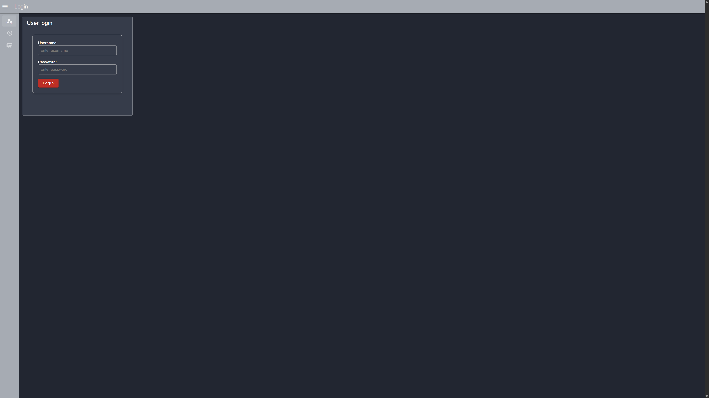
Abbildung -
Benutzerrollen:
Das System unterscheidet drei Benutzerstufen, jede mit eigenen Berechtigungen:
- Operator:
- Einfachste Rolle, geeignet für Endanwender
- Kann grundlegende Informationen einsehen und allgemeine Parameter setzen
- Service:
- Für Servicetechniker vorgesehen
- Configurator:
- Höchste Rechteebene
- Vollzugriff auf alle Einstellungen, Parameter und Wartungsfunktionen
Nach dem Login kann der Benutzer sein Passwort ändern. Eine automatische Abmeldung erfolgt nach 30min.
Menü „Logs“
Der Menüpunkt „Logs“ dient zur Diagnose und Nachvollziehbarkeit von Systemereignissen. Hier können Servicetechniker oder Betreiber sehen, welche Meldungen oder Fehler während eines bestimmten Zeitraums aufgetreten sind.
Funktionen des Logbereichs:
- Datums- und Zeitfilter
- Beginn und Ende eines gewünschten Analysezeitraums auswählen
- Ermöglicht gezielte Fehlersuche bei Störungen oder Supportfällen
- Ergebnisliste in Tabellenform
- Zeitstempel jedes Eintrags
- Loglevel (INFO, WARNING, ERROR, …)
- Meldungstext
- Suchtext
- Schnelle Filterung z.B. nach Fehlercodes, Meldung, Zeit
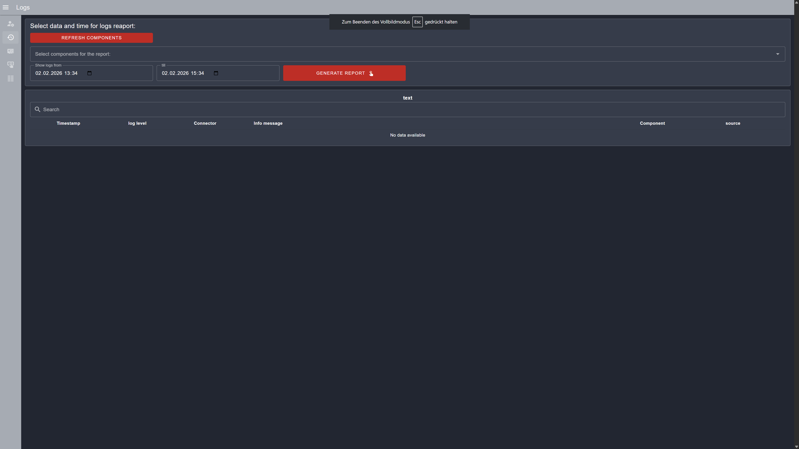
Abbildung -
Menü „Status“
Der Statusbereich biete einen Live-Überblick über sämtliche Komponenten der Ladesäule und Leistungselektronik. Die Daten werden in Echtzeit aktualisiert und teilweise grafisch dargestellt.
COS Conditions – Systemzustand des Controllers
Hier werden grundlegende Hardware- und Systemdaten des internen COS-Controllers überwacht:
- CPU-Temperatur in °C
- RAM-Auslastung in %
- Festplattenbelegung
- CPU-Last
Zusätzlich erscheinen Verlaufsgrafiken, die Trends erkennbar machen und z.B. Temperaturanstiege oder Lastspitzen sichtbar machen.
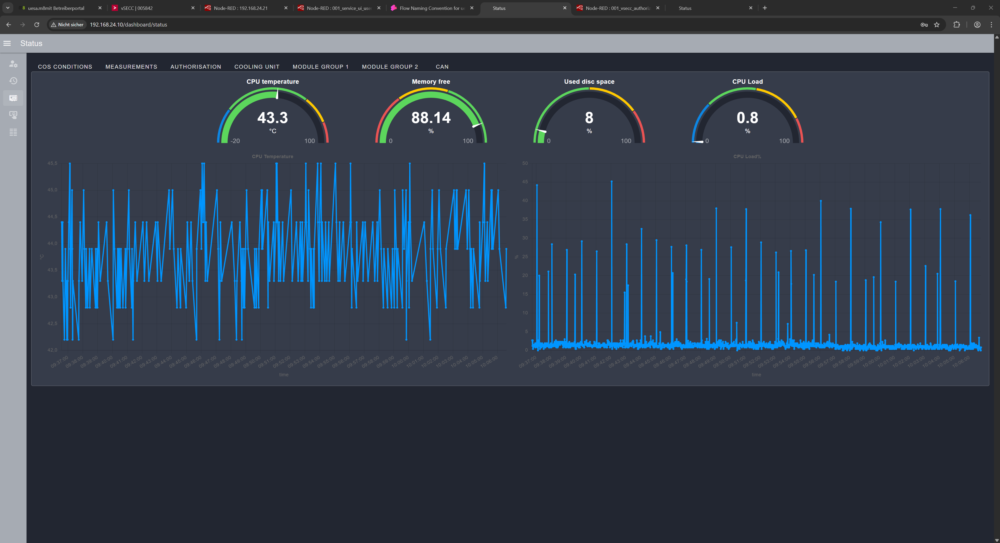
Abbildung -
Measurements
Für jeden Ladepunkt (CP1 & CP2) werden die Messwerte des AST-DC650 Zählers in separaten Abschnitten angezeigt.
Live Measurements
Echtzeitwert wie:
- Spannung (V)
- Strom (A)
- Leistung (kW)
- Temperatur
- Gesamtenergie Import
- Gesamtenergie Export
Diese Informationen sind wichtig für:
- Ladeleistungsanalyse
- Überwachung
- Und Eichrechtsnachweis
Fehlerübersicht (Errors)
Zeigt an:
- Welche Fehlermeldungen aktiv sind,
- Welchen Wert sie aktuell haben,
- Ob Hardware- oder Kommunikationsfehler vorliegen.
Firmware Info
Enthält sämtliche Firmware-Versionen des Energiezählers.
Status
Hier werden interne Betriebszustände angezeigt, u.a.:
- Messzyklen
- Interne Diagnosebits
- Kommunikationsstatus
Connector Data
Zusätzliche Informationen aus dem vSECC-Ladecontrollers, z.B:
- Statusbits
- Fehler
- Interne Prozessdaten
- Firmware-Versionen
Legal Data
Dieser Abschnitt ist besonders wichtig für die Einhaltung des Eichrechts. Er enthält:
- Start- und Stopp-Zeitstempel der Transaktion
- Messwerte in strukturierter Form
- Den Public Key
- Zählerstände
- Ladeinformationen
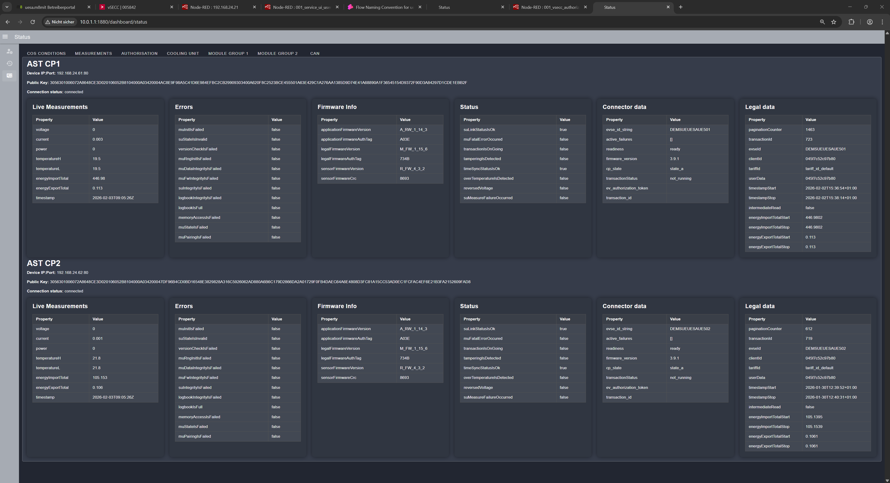
Abbildung -
Authorisation
Hier werden alle Informationen rund um die Autorisierung eines Ladevorgangs dargestellt.
Anzeigen:
- Aktuell ausgewählter Ladepunkt (CP1/CP2)
- Verbindungsstatus zum Backend
- Zuletzt erfasster RFID-Token
- Status des Tokens
- pending
- authorized
- deauthorized
- Zuordnung des Tokens zum Ladepunkt
- Unassigned Tokens (noch nicht zugeordnete Tokens)
- EVCC-ID
- Tokens für CP1/CP2
- Transaktions-ID
Dieser Bereich ermöglicht die schnelle Analyse, warum ein Ladevorgang gestartet oder abgelehnt wurde.
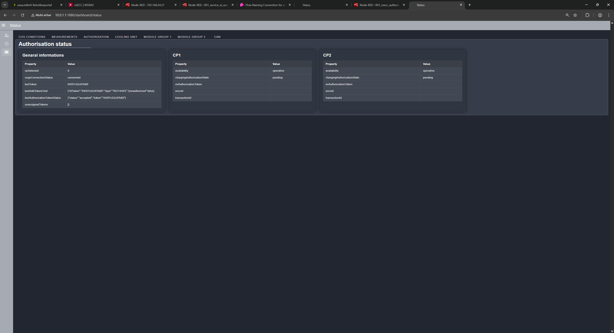
Abbildung -
Cooling Unit - Kühleinheit
Die Kühleinheit ist essenziell für den sicheren Betrieb des Ladesäule über 300A Ladestrom. Im Dashboard werden sämtliche relevanten Temperatur- und Statusdaten angezeigt:
Temperaturen (je Ladepunkt):
- Kühlmitteltemperaturen (+/-)
- Kabelkerntemperaturen (+/-)
- Steckertemperaturen (+/-)
Steuer- und Freigabesignale:
- Startsignal Kühlung
- Startsignal Heizung
- Ladefreigabe CP1 & CP2
- Ladeleistungsreduzierung aktiv
- Reduktionswert in Ampere
Zeitliche Verlaufsgrafiken:
Alle Sensorwerte werden zusätzlich in Diagrammen visualisiert. So lassen sich thermische Probleme schnell erkennen.
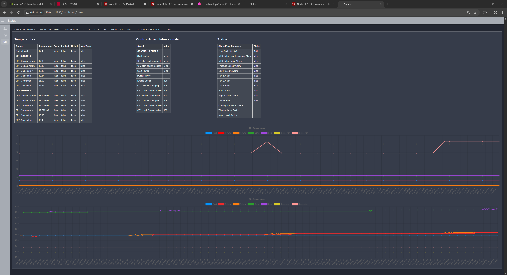
Abbildung -
Module Group 1 & 2
Dieser Abschnitt zeigt den kompletten Überblick über die jeweiligen Leistungsmodulgruppen.
Allgemeine Informationen
- Aktueller Betriebsstatus
- Isolationswerte
- IMD-Zustand
- Rückmeldung der Schütze
- Fehlerzustände
Powermodul
Dieser Abschnitt enthält Messwerte und Zustandsdaten der gesamten Leistungsmodulgruppe:
- Min./Max. Spannung
- Min./Max. Strom
- Aktuelle Gruppenleistung
- Sollspannung /Sollstrom
- Zielleistung
EV
- Aktueller CP-State (A-F)
- Ladestatus
- Fahrzeug-ID
- SOC (State of Charge)
Modultabelle
- Modul-ID
- Betriebsmodus
- Betriebsstunden
- Temperatur
- Ist-/Soll-Spannung
- Ist-/Soll-Strom
Bei aktiver Zusammenschaltung erscheinen alle Module beider Gruppen zusammengeführt.
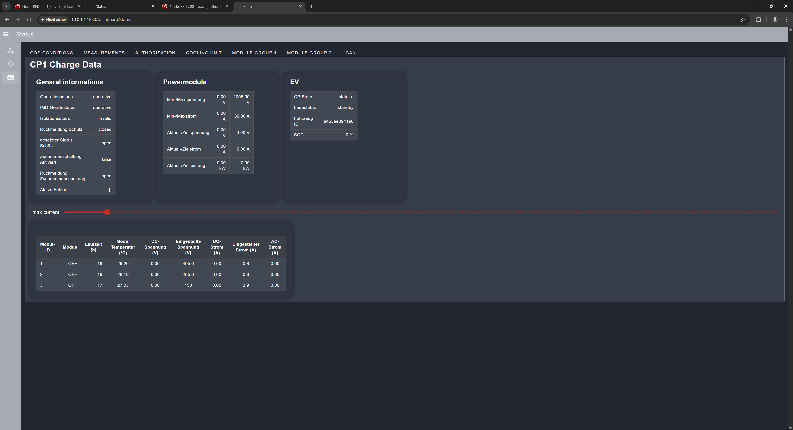
Abbildung -
Menü „Actions“
Der Menüpunkt Actions fasst alle zentralen Steuer- und Wartungsfunktionen der Ladesäule zusammen. Er ist nur sichtbar und nutzbar, wenn ein Benutzer angemeldet ist – abhängig von der Benutzerrolle können einzelne Funktionen gesperrt sein.
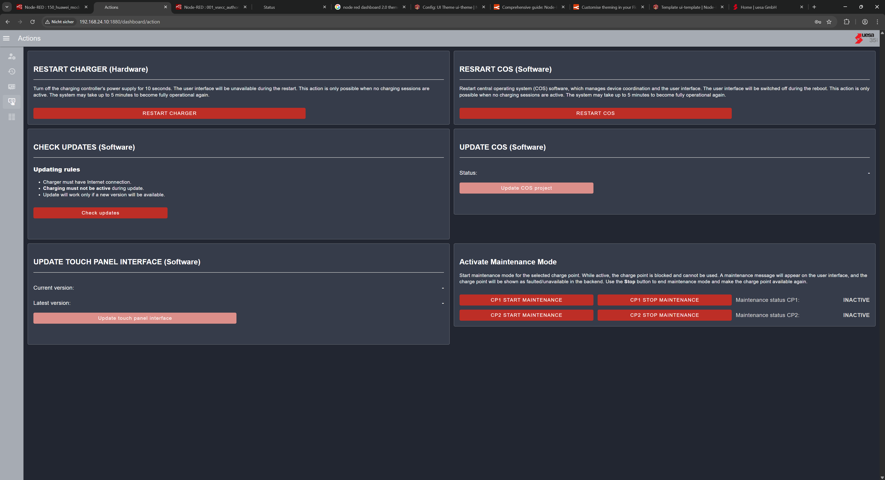
Abbildung -
Der Bereich ist in mehrere Funktionsgruppen unterteilt:
Restart Charger (Hardware)
Diese Funktion führt einen kompletten Hardware-Reset der folgenden Komponenten durch:
- vSECC-Ladecontroller
- Energiezähler CP1 und CP2
Ablauf:
- Das COS sendet einen Trigger an den Router (RUT241).
- Der Router schaltet über einen digitalen Ausgang die Stromversorgung der genannten Geräte für 10s ab.
- Die Hardware startet anschließend automatisch neu.
Wichtig:
- Während eines aktiven Ladevorgangs kann die Funktion nicht ausgeführt werden
- Der Neustart wird vollständig in den Logs vermerkt
Restart COS (Software)
Im Gegensatz zum Hardware-Reset wird hier nur die Software des COS-Controllers neu gestartet – keine andere Hardware wird beeinflusst.
Ablauf:
- Der Befehlt „sudo reboot“ wird intern ausgelöst.
- Der COS-Controller fährt herunter und bootet neu.
- Alle laufenden Dienste werden beendet und sauber neu gestartet.
Einsatzgebiet:
- COS-Oberfläche funktioniert nicht korrekt
- Frontend hängt
Check Updates (Software)
Diese Funktion sucht online nach verfügbaren Software-Updates
Voraussetzung:
- Ladesäule muss eine aktive Internetverbindung haben.
- Es darf kein Ladevorgang aktiv sein.
Nach dem Scan werden die Ergebnisse in den folgenden Bereichen angezeigt:
- Update COS (Software)
- Update Touch Panel Interface (Software)
Update COS (Software)
Hier kann eine neue, stabile Version der COS-Software installiert werden. Der Update-Mechanismus sucht nur nach „stable“-Releases.
Nach dem Start:
- Die aktuell installierte Version wird geprüft.
- Falls eine neuere Version vorhanden ist → Download + Installation
- COS startet automatisch neu
Der Vorgang kann je nach Interverbindung mehrere Minuten dauern.
Update Touch Panel Interface (Software)
Dieser Bereich bezieht sich auf das Benutzerdisplay an der Ladesäule (Touch-Panel). Angezeigt werden:
- Installierte Version
- Neuste verfügbar Version
Wenn ein Update verfügbar ist, kann es über eine Schaltfläche installiert werden. Das UI wird automatisch neu geladen.
Activate Maintenance Mode
Mit dieser Funktion lässt sich der Wartungsmodus für einzelne Ladepunkte aktivieren bzw. deaktivieren.
Wirkung:
- Der betroffene Ladepunkt wird gesperrt
- Am Touch-Display erscheint eine entsprechende Meldung
- Es können keine Ladevorgänge begonnen werden
- Der Modus wird für Updates und sichere Wartung empfohlen
Der Wartungsmodus sollte immer dann aktiviert werden, wenn längere Arbeiten an der Hardware, Software oder Parameter anstehen.
Menü „Parameters“
Der Menüpunkt Parameters ermöglich die Konfiguration sämtlicher Betriebsparameter der Ladesäule. Dieser Bereich ist nur nach Anmeldung sichtbar und unterliegt strengen Sicherheitsregeln.
Voraussetzungen zur Parameteränderungen:
Parameter können nur geändert werden, wenn:
- Ein Benutzer mit ausreichender Berechtigung angemeldet ist
- Der Ladepunkt sich im Zustand A (kein Fahrzeug) oder F (Fehler) befindet
Betreiber‑Einstellungen (Operator Settings)
Diese Parameter dürfen vom Betreiber der Ladesäule angepasst werden und haben keine tiefgreifenden Auswirkungen auf interne Abläufe.
User Interface
Anzeigeeinstellungen für das Display:
- Stationsname
- Betreibername
- Support-Telefonnummer
- Standardsprache des Displays (kann vom Nutzer des Displays umgestellt werden)
Payment System (für spätere Nutzung)
Konfiguration der Bezahlkomponenten
- Händler-E-Mail
- Währung
- Betrag für die Vorautorisierung
- kWh-Preis für CP1 und CP2
- Steuer-/Mehrwertsteuersatz
Powermodule
Funktionen zur Leistungsreduzierung der Ladesäule:
- Dauerhafte Leistungsbegrenzung
- Zeitintervall 1
- Zeitintervall 2
Wenn sich die Zeitintervalle überlappen, gilt immer der kleinste Reduktionswert.
Die Werte können nicht die maximale Leistung des Ladegeräts übersteigen und sollten nur zur Reduzierung genutzt werden!
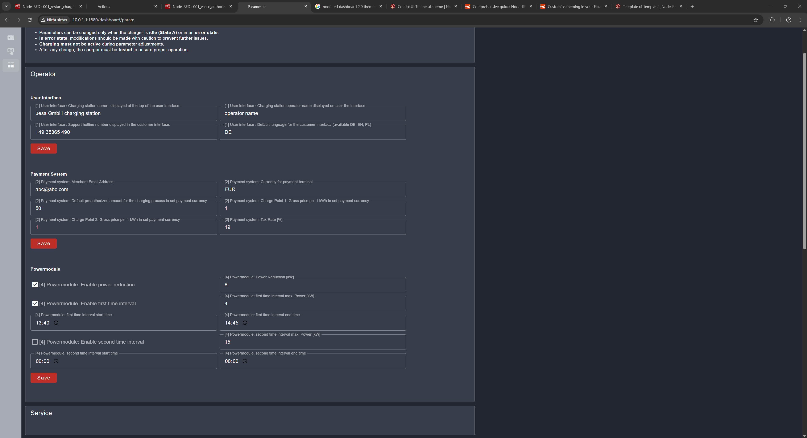
Abbildung -
Hersteller‑Einstellungen
Diese Parameter betreffen die Kernfunktionen der Ladesäule. Nur Benutzer mit höchster Berechtigungsstufe (Configurator) dürfen diese ändern.
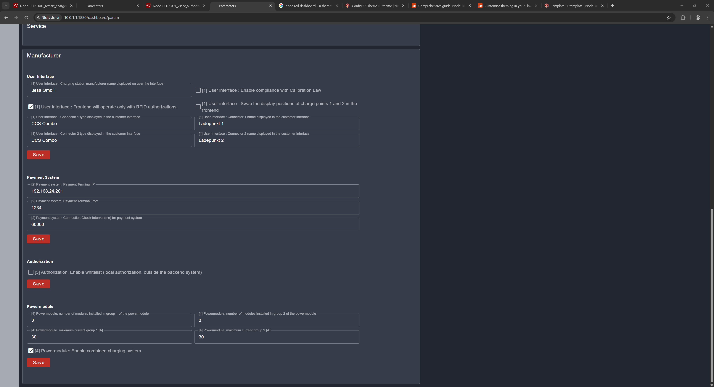
Abbildung -
User Interface (erweiterte UI-Konfiguration)
In den User Interface Konfiguration kann der Hersteller folgende Einstellungen treffen, die das Display an der Ladesäule betreffen:
- Herstellername
- Anzeige des eichrechtlichen Hinweises
- Aktivieren des Modus „Nur RFID“ (keine Plug-&-Charge-Startoption)
- Position der Ladepunkte auf dem Display tauschen
- Ladepunkt-Typ (Cp1/CP2)
- Ladepunkt-Name (Displaybezeichnung
Payment System (Schnittstellen-Konfiguration)
- IP-Adresse des Zahlungssystem
- Port Nummer
- Intervall zur Verbindungsprüfung
Autorisation (RFID-Verwaltung)
- Aktivieren der Offline-Whitelist
- Tokens direkt einlernen/löschen
- Speicherung der zuletzt akzeptierten Tokens für Offline-Fälle
Bei der Aktivierung des Offline-Modus erscheinen zusätzliche Eingabefelder.
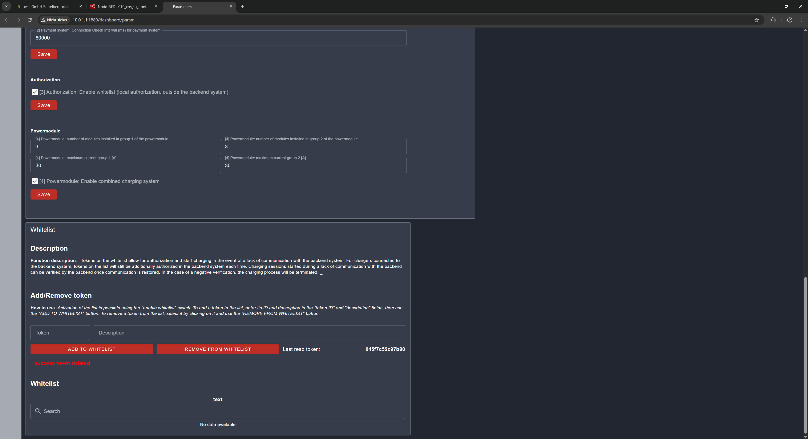
Abbildung -
Powermodule
- Anzahl der Module pro Ladepunkt
- Maximaler Strom je Ladepunkt
- Aktivieren der CCM-Funktion (Zusammenschalten der Modulgruppen)